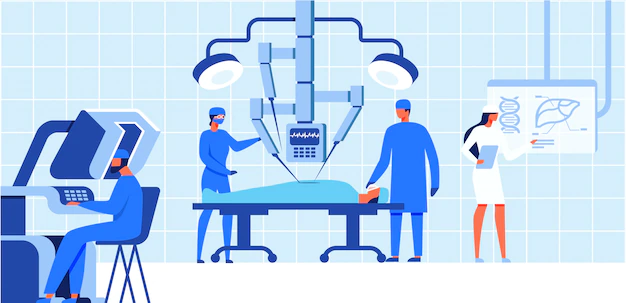

Linguagem Utilizada
C/C++ C e C++ podem ser ótimas opções para desenvolvimento de softwares para robôs, graças as suas capacidades de poderem ser comunicar com hardwares, suas variadas bibliotecas de funções, permitindo assim situações que os programas possam ser utilizados para situações mais complexas
A programação de robôs é um processo que garante a realização das tarefas de acordo com o esperado em diversas áreas. Por isso, a programação de robôs está presente na área da saúde, no setor automobilístico, na área da educação e em diferentes setores.